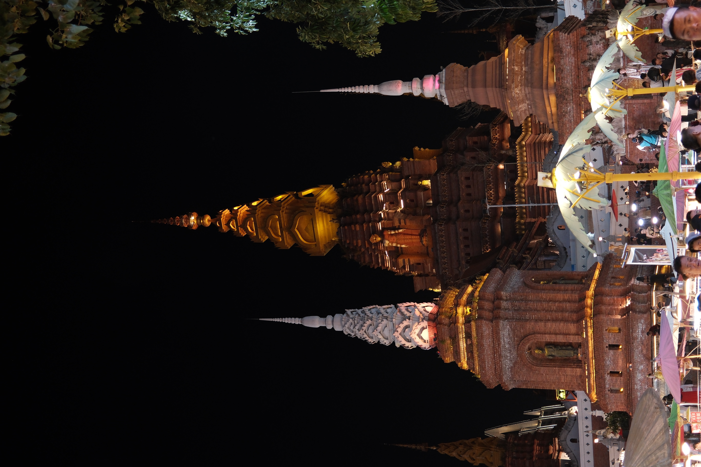
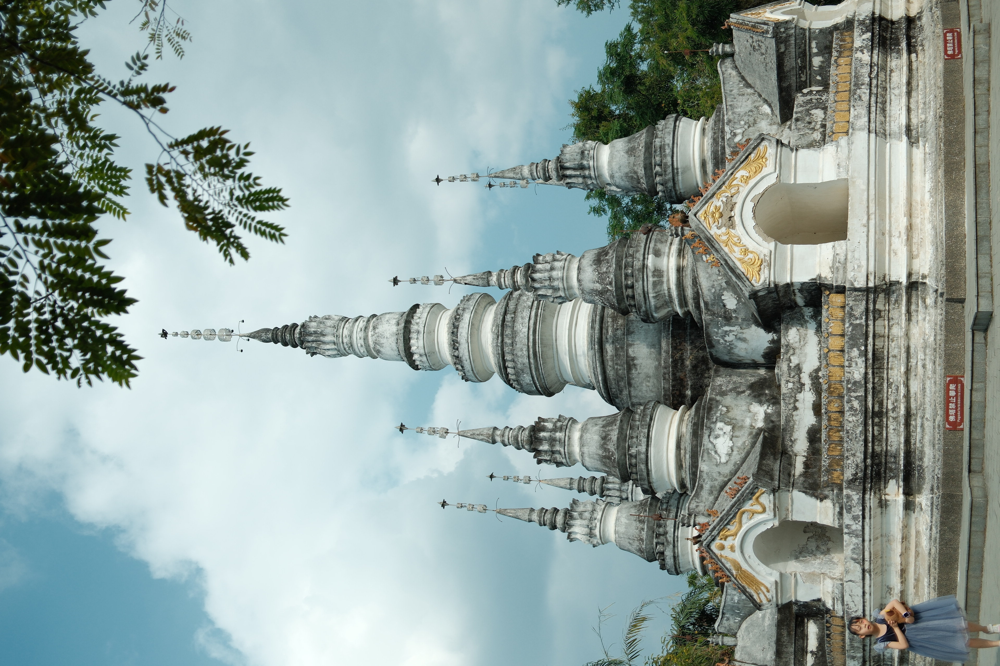
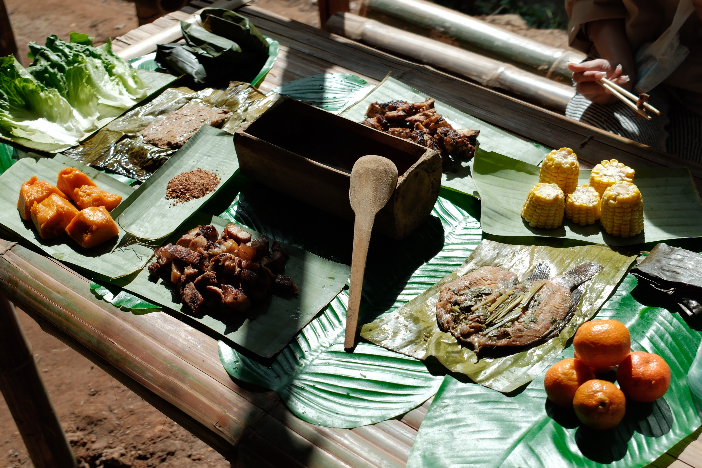
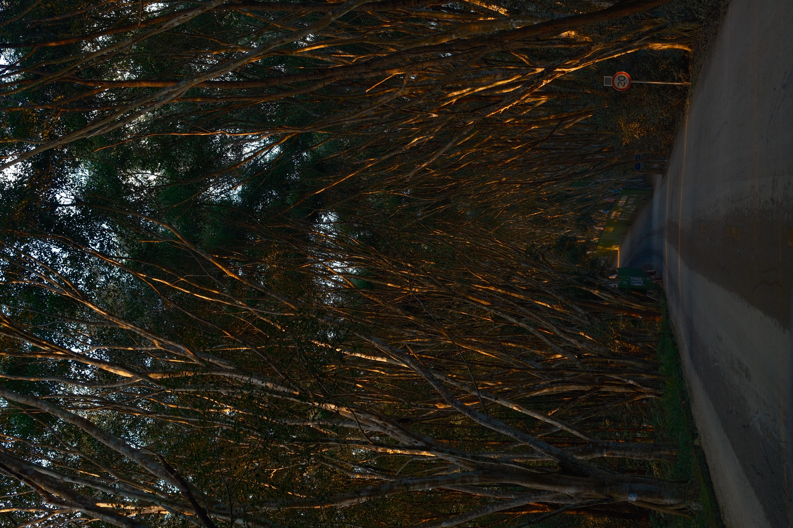

Xi Shuang Ban Na

Red Flower Tree
2025-01-02
There is a tree with red flowers in the park, and many people are resting beneath it
The Iconic Pagoda
2025-01-01
The iconic Pagoda of Xishuangbanna at night. There is a large night market nearby.


Forest Stream Path
2025-01-02
Hiking through these mountain woods. It was an exhausting trek, but the scenery and the air were wonderful.
Tall Trees
2025-01-03
This kind of very tall tree is quite common here, but I’ve forgotten what it’s called.


White Pagoda
2025-01-04
A very famous and classic white pagoda.
Traditional Local Food
2025-01-03
While hiking through the jungle, we stopped along the way to eat traditional local food.


The Road in the Woods at Sunset
2025-01-04
A road through the woods at sunset—I'm on my way back to the hotel. Music plays in the car, this is the most leisurely moment of all.
Road with Sunset
2025-01-04
The park was bathed in bright sunlight this afternoon, and the trees lining the path shielded me from the sun.